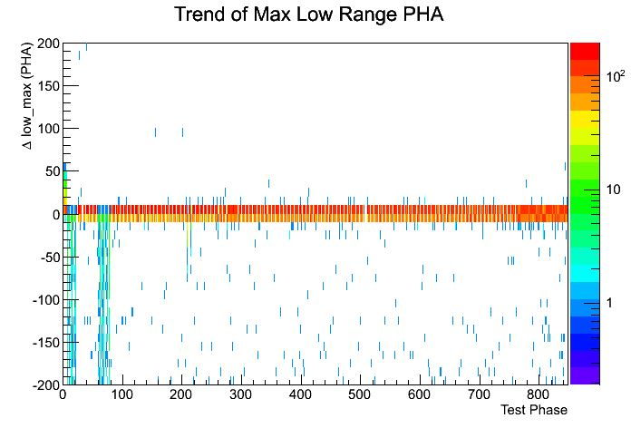
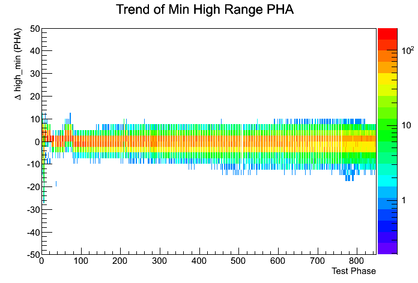

ACD Range crossover calibration trending
List of calibrations
Summary Plots


Full Output:
Plots Directory
ROOT files:
summary histograms
and
per PMT
.
Max Low Range
Min High Range
Top A PMTs
Top A PMTs
Top B PMTs
Top B PMTs
Side_1 A PMTs
Side_1 A PMTs
Side_1 B PMTs
Side_1 B PMTs
Side_2 A PMTs
Side_2 A PMTs
Side_2 B PMTs
Side_2 B PMTs
Side_3 A PMTs
Side_3 A PMTs
Side_3 B PMTs
Side_3 B PMTs
Side_4 A PMTs
Side_4 A PMTs
Side_4 B PMTs
Side_4 B PMTs
Rib A PMTs
Rib A PMTs
Rib B PMTs
Rib B PMTs